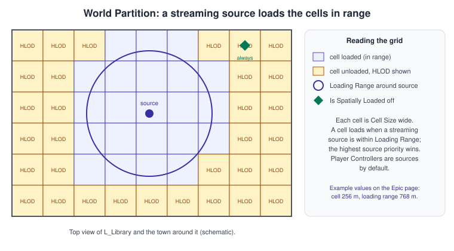
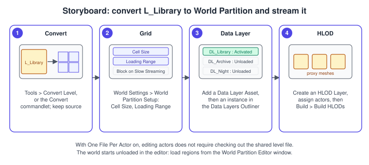
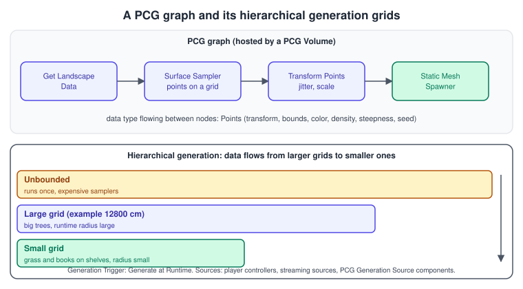

World Partition and PCG
|
This content was generated with the assistance of AI and should be verified against the official documentation before being relied on in production. |
A game world can be one room or a continent. A room fits in memory, so a level that loads all at once is fine. A continent does not, and several people editing one huge level file would be constantly in each other’s way. World Partition is Unreal Engine 5’s answer: the world stays one persistent level, but the engine divides it into cells, stores every actor in its own file, and loads and unloads cells around the player. Procedural Content Generation (PCG) is the companion tool for filling those worlds: instead of placing ten thousand shelves, books or trees by hand, you describe the rules in a node graph and let the engine generate them, in the editor or while the game runs.
The facts on this page were checked in November 2026 against the Unreal Engine 5.8 documentation (5.8 was released on 2026-06-17, and the latest hotfix found is 5.8.4). World Partition and PCG work in the editor on Windows, macOS and Linux and in packaged builds on every platform Unreal targets; Mesh Terrain, Fast Geometry Streaming and the
Procedural Vegetation Editor are labelled Experimental in 5.8 and are called out as such. In the running example the library level L_Library is converted to World Partition and is surrounded by a town, a wing of the library is a Data Layer that can be switched on, distant cells are shown through HLOD proxies, and a PCG graph dresses the wing’s shelves with books built
from the shared bookshelf.glb. Streaming interacts with navigation and AI (see AI, Navigation and Perception) and with the Nanite streaming described in Nanite and Virtual Geometry.
Why World Partition
Unreal Engine 4 used World Composition for big maps: the designer cut the world into sublevels by hand and the engine streamed those sublevels. The UE5 migration guide says World Partition is the UE5 system for large, streaming worlds, and that World Composition still exists in UE5 but is deprecated, receives no upgrades, fixes or support, and will be removed in a future UE5 version.
Maps can be converted with the WorldPartitionConvertCommandlet. The difference is that World Partition removes the manual sublevel work: the engine owns the partitioning, and the cell size is a setting, not an editing task.
Four features work together, and the rest of the page takes them in turn:
| Feature | What it does |
|---|---|
Runtime grid (streaming) |
Divides space into cells and loads the cells within range of streaming sources. |
One File Per Actor (OFPA) |
Stores each actor in its own external file, so teams rarely need the main level file checked out. |
Data Layers |
Groups actors by purpose (a wing, a time of day) for editing and, for runtime layers, for switching on and off in code or Blueprint. |
HLOD (Hierarchical Level of Detail) |
Generates proxy meshes so distant, unloaded cells still look populated. |
The streaming grid

World Partition divides the world into a grid of cells. A cell is loaded when it is within the Loading Range of a streaming source; otherwise it is unloaded and, if HLODs are built, it is represented by a proxy. The settings are in World Settings > World Partition Setup:
| Setting | Meaning |
|---|---|
Cell Size |
The dimensions of one grid cell. Epic’s example uses 256 m by 256 m by 256 m. |
Loading Range |
The distance from a streaming source at which cells are loaded. The example uses a 768 m radius. |
Block on Slow Streaming |
Stalls the game when cells cannot be loaded fast enough, instead of letting the player see unloaded space. |
Priority |
A cell takes the highest priority of any streaming source that touches it. |
The default is a single 2D runtime hash grid, because using more than one grid can negatively affect performance. Each actor has settings that decide how it takes part:
-
Runtime Grid: which grid the actor belongs to. If it is None, the system chooses.
-
Is Spatially Loaded: when on, the actor loads only when within range of a streaming source (unless it is assigned to a disabled Data Layer). When off, it loads regardless of distance (again unless its Data Layer is disabled), which is how a sky actor, a lighting actor or the player start are kept loaded.
-
Actors that reference each other are bundled and load together, so a long chain of references can pull large areas into memory. Keep references local, or use soft references.
Streaming sources
By default Player Controllers act as streaming sources, through their Enable Streaming Source property. The World Partition Streaming Source Component adds custom sources: it supports custom Shapes, a Priority and a Target State (Loaded or Activated), and the Blueprint nodes Enable Streaming Source, Disable Streaming Source and Is Streaming Completed control it. A cutscene camera, a vehicle’s lookahead point or a teleport destination are all good uses: add a source at the destination and wait for Is Streaming Completed before moving the player, so they never arrive in an empty world.
Source: World Partition in Unreal Engine
Enabling World Partition and the editor workflow
-
New projects and templates: the Blank, First Person, Third Person, Top Down and Vehicle Advanced templates have World Partition enabled but Enable Streaming off. The Open World map type enables World Partition, One File Per Actor, Data Layers and HLODs and includes a 2 km by 2 km sample Landscape.
-
Converting a level: use Tools > Convert Level, or the
WorldPartitionConvertCommandlet. Useful flags are-ConversionSuffix,-DeleteSourceLevels,-ReportOnlyand-OnlyMergeSubLevels; the last produces a map that is ready to be used as a Level Instance. -
The editor starts unloaded: only actors with Is Spatially Loaded off appear at first. Load regions from the World Partition Editor window, or use Location Volumes, which create named regions once the level is saved. Shift + double-click starts Play In Editor at a location and Ctrl + double-click loads a region around it.
-
Minimaps in the World Partition Editor need Virtual Textures enabled in the Project Settings.
-
Dynamic loading range scaling can improve Play In Editor performance.
-
Blueprints: Blueprint Classes are preferred. Actors referenced from the Level Blueprint are marked Always Loaded, so a Level Blueprint that mentions a thousand actors defeats streaming.
Cooking and batch work
To cook a partitioned world from the command line use -run=cook with -targetplatform, -UnVersioned and -map. The UWorldPartitionBuilderCommandlet framework automates batch work such as HLOD generation, AI navigation data and resaving actors without loading the whole world; packaging in general is in Packaging for Desktop.
Debugging commands
| Command | Use |
|---|---|
|
Draws the runtime grid, with loaded cells highlighted; at runtime it also shows loaded HLOD cells in green. |
|
Overrides the loading range per grid. |
|
Caps the number of cells loading at once. |
|
Turns HLODs off, to see what the real cells look like. |
|
Logs the Data Layers and their runtime states. |
|
Force or toggle a Data Layer at runtime. |
One File Per Actor
With One File Per Actor (OFPA) each actor instance is saved in its own external file, so changing an actor no longer requires saving the main level file, and several people can work on the same level with far fewer conflicts. OFPA is on by default with World Partition. It is an editor feature: when the game is cooked, all actors are embedded in their level files.
-
Without World Partition: open Window > World Settings, check Use External Actors under World, click Yes to convert, and save the level. Only the current level converts; load each sublevel and repeat, or run the
ConvertLevelsToExternalActorsCommandletwith-convertsublevels. -
Source control: external file names are encoded, so a changelist shows opaque names. The View Changelist window shows actor names, level paths and asset types instead. Validate a changelist before submitting, because a partial submit can leave dangling references, and submit OFPA files from within the editor. Epic notes that changelist support requires Perforce.
-
Data Layers and OFPA: assigning a Data Layer to an actor changes only that actor’s file.
Data Layers
A Data Layer groups actors that belong together, so they can be loaded, hidden and edited as a unit. There are two types:
-
Editor Data Layers organise actors in the editor; you load, unload and toggle visibility in the Data Layers Outliner.
-
Runtime Data Layers have the same properties but can also be changed at runtime from Blueprint or C++.
The system separates the definition from its use. A Data Layer Asset is a project-level asset created in the Content Browser (Miscellaneous > Data Layer) that stores the name, type and debug colour. A Data Layer Instance is created in the Data Layers Outliner for one world and references an asset; one asset can have several instances with different settings, for example one that starts unloaded and one that is always enabled. Per instance the outliner offers Is Initially Visible, Is Initially Loaded and Initial Runtime State.
Runtime control goes through the Data Layer Subsystem (UDataLayerSubsystem). In Blueprint, get the subsystem and call Set Data Layer Instance Runtime State; in C++ call UWorld::GetSubsystem<UDataLayerSubsystem> and SetDataLayerInstanceRuntimeState, passing a UDataLayerAsset and EDataLayerRuntimeState::Activated or Loaded. In client and server builds only the server (HasAuthority()) should activate layers; the state then reaches clients through the streaming system.
Source: World Partition - Data Layers
HLOD
HLOD (Hierarchical Level of Detail) generates proxy meshes that stand in for unloaded cells, so the distance is not empty and the number of draw calls stays low. HLODs are configured with HLOD Layer assets, created from the Content Drawer with + Add > Miscellaneous; a project can use several layers. Three layer types are documented:
| Layer type | Behaviour |
|---|---|
Instancing |
Replaces Static Meshes with Instanced Static Mesh components at their lowest LOD. Suited to imposters such as trees and foliage. |
Merged Mesh |
Merges the Static Meshes into one proxy mesh. |
Simplified Mesh |
Merges the meshes into one proxy and applies mesh simplification, controlled by Screen Size and related proxy settings. |
Key layer settings are Always Loaded (keeps the generated proxy loaded), Cell Size and Loading Range (the runtime grid that streams HLOD cells; both are hidden when Always Loaded is on), Parent Layer (assigns generated assets to another HLOD Layer, which builds a hierarchy) and HLODMaterial (the base material for baking; the default is usually enough).
To build HLODs:
-
Add actors to an HLOD Layer through the actor’s HLOD property, a Data Layer’s Default HLOD Layer, or the World Settings' Default HLOD Layer.
-
Set each actor’s Mobility to Static and enable HLOD generation for it.
-
Run Build > World Partition > Build HLODs (the menu path in the World Partition page), or the commandlet:
UnrealEditor.exe YourProject YourMap -run=WorldPartitionBuilderCommandlet -AllowCommandletRendering -Builder=WorldPartitionHLODsBuilder, with the options-SetupHLODs(create or update HLOD actors without building geometry),-BuildHLODsand-DeleteHLODs. Unchanged sources are not rebuilt.
In the editor, the Level of Detail Coloration view mode with Hierarchical LOD Coloration shows the HLODs; at runtime wp.Runtime.ToggleDrawRuntimeHash2D shows the loaded HLOD cells. HLODs are a build step: remember to rebuild them in your CI after content changes (see Testing and Automation).
Procedure: stream the Bookshelf library

-
Open
L_Library. Choose Tools > Convert Level, accept the options (the commandlet flag-ReportOnlylets you preview), and save. The level now has World Partition and One File Per Actor. Source: World Partition in Unreal Engine -
Open World Settings > World Partition Setup and set Cell Size and Loading Range for the town (Epic’s example uses 256 m cells and a 768 m range). Leave Block on Slow Streaming off for exploration and consider it for fast vehicles.
-
In the Content Browser choose Miscellaneous > Data Layer, name the asset
DL_LibraryWing, then in the Data Layers Outliner add an instance of it, set its Initial Runtime State to Unloaded, and assign the east wing’s actors to it. Source: World Partition - Data Layers -
Create an HLOD Layer asset for the town buildings (Merged Mesh or Simplified Mesh), set it as the Default HLOD Layer in World Settings, and run Build > World Partition > Build HLODs. Use Level of Detail Coloration to check the result. Source: World Partition - Hierarchical Level of Detail
-
Press Play. Run
wp.Runtime.ToggleDrawRuntimeHash2Dto see the cells around the character, andwp.DumpDatalayersto confirm the wing starts unloaded.
Procedural Content Generation (PCG)
The PCG framework is Epic’s toolset for building procedural content and tools, for technical artists, designers and programmers. A PCG graph is a node graph that turns spatial input into points and then spawns content from them; it runs in the editor and at runtime. Points are the central data type, carrying a transform, bounds, colour, density, steepness and a seed.

The standard workflow for scattering objects over a landscape is: place a PCG Volume (a basic volume that hosts a PCG component), add a Get Landscape Data node, feed it into a Surface Sampler (which places points on a surface in a regular grid; Point Extents set the cell size, Looseness adds variation and Points Per Square Meter limits crowding), connect a Transform Points node (jitter, rotate, scale) and a Static Mesh Spawner (which places meshes at the points, picking entries by weight), then press Generate on the volume. Sampling points on Static Meshes needs the additional Geometry Script Interop plugin. The Static Mesh Spawner can also run on the GPU for faster runtime instancing, but that path is experimental and its instances are not saved. The full node list is in Epic’s PCG node reference and data types reference.
Generation modes
| Mode | Behaviour |
|---|---|
Non-partitioned (default) |
Output stays inside the component’s domain, such as a volume or a spline. Fine for small assets, but it can hurt performance over large areas. |
Partitioned |
Splits the output across a grid, so World Partition and Level Instancing can stream it. Enable it with Is Partitioned, set the cell size with Partition Grid Size on the PCG World Actor, then Cleanup and Generate each PCG asset. |
Hierarchical Generation (HiGen) |
Requires partitioning. Enable Use Hierarchical Generation in the Graph Settings and pick a HiGen Default Grid Size; a Grid Size node before the sampler nodes overrides the grid per branch. Nodes without a Grid Size node use the default grid; data flows from larger grids to smaller ones, never the reverse; a node with inputs from several grids uses the smallest. |
Unbounded |
Runs a node once instead of once per cell, which helps expensive samplers over large volumes; add Grid Size nodes afterwards to restrict it. Cull Points Outside Actor Bounds removes duplicate points that appear when large-grid data is copied into small cells. |
Runtime generation
Set the PCG asset’s Generation Trigger to Generate at Runtime to generate content as the player moves. Generation happens near generation sources: the editor viewport (when Treat Editor Viewport as Generation Source is on in the PCG World Actor), player controllers, World Partition streaming sources and PCG Generation Source components. Generation Radii are set per grid size in the Graph Settings (or overridden per component); radii should increase with grid size, and the Cleanup Radius Multiplier sets when generated meshes are removed. Epic notes that runtime generation is most effective when paired with hierarchical generation. The scheduling policy, set per component, favours components near and in front of a source based on distance and view direction (Direction Weight has had more influence since 5.5), and Use Frustum Culling adds generate and cleanup bounds modifiers. Runtime-generated partition actors are pooled (on by default, initial pool of 100) to avoid constant allocation.
| Console variable | Purpose | Default |
|---|---|---|
|
Toggle runtime generation |
|
|
Verbose scheduler logging |
|
|
Toggle actor pooling |
On |
|
Initial pooled actor count |
100 |
|
Ticks between scheduling components |
0 |
|
Components generating in parallel |
16 |
|
Per-frame PCG budget in milliseconds |
16.667 |
|
Per-frame PCG budget in the editor in milliseconds |
50 |
In the Debug Object Tree the component names include the grid size, for example PCGPartitionActor_12800_1_5_0 for the 12800 cm grid.
Source: Using PCG Generation Modes
PCG with World Partition
PCG output can take part in the World Partition features above. A graph can assign the actors it generates to a Data Layer (the Spawn Actor and Create Target Actor nodes have a Data Layer Source Type of Self, which copies the layers of the source component, or Data Layer References, which reads them from a Param Data attribute, with included and excluded layers as filters). The Get Actor Data Layers node reads the Data Layers of input actors and Partition By Actor Data Layers splits points into one partition per combination of layers.
In the same way a graph can assign everything it generates to an HLOD Layer, with an HLOD Source Type of Self, Reference or Template. A partitioned PCG volume that fills a Data Layer such as DL_LibraryWing with books therefore streams, hides and gets HLOD proxies together with the hand-placed content of that wing.
Source: Using PCG with World Partition
Mesh Terrain (Experimental)
Mesh Terrain is a mesh-based terrain solution that the 5.8 release notes list as Experimental. It aims to remove the constraints of the heightfield-only Landscape: terrain can have overhangs, tunnels and vertical cliff walls, the resolution can vary across the terrain (denser at points of interest), and edits are non-destructive modifiers that can be stacked and duplicated. It builds on 3D modelling tools, layering, virtual textures, variable tessellation and Nanite. It requires a World Partition level and the MeshPartition, MeshPartitionWater, PCG MeshPartition Interop and Mesh Terrain Mode plugins. Preview sections exist only in the editor, so compiled sections must be generated for Play In Editor and cooked games. PCG can read and write mesh partitions, and 5.8 adds PCG nodes such as Bake Mesh Terrain Section Mesh and Get Mesh Terrain Section Actor. The documentation advises caution when shipping with it, so use a classic Landscape for production terrain today. The 5.8 release notes list Fast Geometry Streaming and the Procedural Vegetation Editor as Experimental as well.
Complete C++ examples for the Bookshelf
The examples use the Bookshelf module. Add "PCG" to PublicDependencyModuleNames in Bookshelf.Build.cs for the third one, and enable the PCG plugin (Edit > Plugins).
ABookshelfWingSwitch: activating a Data Layer from C++
// BookshelfWingSwitch.h
#pragma once
#include "CoreMinimal.h"
#include "GameFramework/Actor.h"
#include "BookshelfWingSwitch.generated.h"
class UDataLayerAsset;
/** Turns the east wing of the library on or off by changing a Data Layer's runtime state. */
UCLASS()
class BOOKSHELF_API ABookshelfWingSwitch : public AActor
{
GENERATED_BODY()
public:
ABookshelfWingSwitch();
/** Activates the wing: its actors load and become visible. Runs on the server only. */
UFUNCTION(BlueprintCallable, Category = "World")
void OpenWing();
/** Unloads the wing again. */
UFUNCTION(BlueprintCallable, Category = "World")
void CloseWing();
protected:
/** The Data Layer Asset DL_LibraryWing. */
UPROPERTY(EditAnywhere, Category = "World")
TObjectPtr<const UDataLayerAsset> WingLayer;
private:
void SetWingState(bool bActive);
};// BookshelfWingSwitch.cpp
#include "BookshelfWingSwitch.h"
#include "Bookshelf.h"
#include "Engine/World.h"
#include "WorldPartition/DataLayer/DataLayerAsset.h"
#include "WorldPartition/DataLayer/DataLayerSubsystem.h"
ABookshelfWingSwitch::ABookshelfWingSwitch()
{
PrimaryActorTick.bCanEverTick = false;
}
void ABookshelfWingSwitch::OpenWing()
{
SetWingState(true);
}
void ABookshelfWingSwitch::CloseWing()
{
SetWingState(false);
}
void ABookshelfWingSwitch::SetWingState(bool bActive)
{
if (!HasAuthority() || !WingLayer)
{
return; // only the server changes Data Layer states
}
if (UDataLayerSubsystem* DataLayers = UWorld::GetSubsystem<UDataLayerSubsystem>(GetWorld()))
{
const EDataLayerRuntimeState State = bActive ? EDataLayerRuntimeState::Activated : EDataLayerRuntimeState::Unloaded;
DataLayers->SetDataLayerInstanceRuntimeState(WingLayer, State);
UE_LOG(LogBookshelf, Log, TEXT("Wing layer %s"), bActive ? TEXT("activated") : TEXT("unloaded"));
}
}Source: World Partition - Data Layers
The Blueprint equivalent is the Get Data Layer Subsystem node followed by Set Data Layer Instance Runtime State, with the Data Layer Asset picked in the pin and Activated or Unloaded chosen as the state, behind a Has Authority branch.
A streaming source on the librarian
The ALibrarianCharacter is not a player, so the world around it would not load for a server-side NPC walking far from every player. A streaming source component makes it keep its surroundings loaded while it works.
// In LibrarianCharacter.h (extract)
class UWorldPartitionStreamingSourceComponent;
UPROPERTY(VisibleAnywhere, Category = "World")
TObjectPtr<UWorldPartitionStreamingSourceComponent> StreamingSource;// In LibrarianCharacter.cpp (extract)
#include "Components/WorldPartitionStreamingSourceComponent.h"
ALibrarianCharacter::ALibrarianCharacter()
{
StreamingSource = CreateDefaultSubobject<UWorldPartitionStreamingSourceComponent>(TEXT("StreamingSource"));
StreamingSource->SetupAttachment(GetRootComponent());
}
void ALibrarianCharacter::BeginPlay()
{
Super::BeginPlay();
StreamingSource->EnableStreamingSource();
}
bool ALibrarianCharacter::AreSurroundingsReady() const
{
return StreamingSource && StreamingSource->IsStreamingCompleted();
}Source: World Partition in Unreal Engine
Use AreSurroundingsReady in the StateTree ST_Librarian to wait before the NPC starts to walk, as the component’s Is Streaming Completed node is meant to be used.
ABookshelfDecorVolume: generating the wing’s books with PCG
// BookshelfDecorVolume.h
#pragma once
#include "CoreMinimal.h"
#include "GameFramework/Actor.h"
#include "BookshelfDecorVolume.generated.h"
class UBoxComponent;
class UPCGComponent;
class UPCGGraphInterface;
/** A volume whose PCG graph fills the shelves of the wing with books. */
UCLASS()
class BOOKSHELF_API ABookshelfDecorVolume : public AActor
{
GENERATED_BODY()
public:
ABookshelfDecorVolume();
/** Generates the content now (also available on the component in the editor). */
UFUNCTION(CallInEditor, Category = "PCG")
void Regenerate();
protected:
UPROPERTY(VisibleAnywhere, Category = "PCG")
TObjectPtr<UBoxComponent> Bounds;
UPROPERTY(VisibleAnywhere, Category = "PCG")
TObjectPtr<UPCGComponent> PCG;
/** The graph with Surface Sampler and Static Mesh Spawner nodes for ABookActor meshes. */
UPROPERTY(EditAnywhere, Category = "PCG")
TObjectPtr<UPCGGraphInterface> Graph;
};// BookshelfDecorVolume.cpp
#include "BookshelfDecorVolume.h"
#include "Components/BoxComponent.h"
#include "PCGComponent.h"
#include "PCGGraph.h"
ABookshelfDecorVolume::ABookshelfDecorVolume()
{
PrimaryActorTick.bCanEverTick = false;
Bounds = CreateDefaultSubobject<UBoxComponent>(TEXT("Bounds"));
SetRootComponent(Bounds);
Bounds->SetBoxExtent(FVector(800.0, 800.0, 300.0));
Bounds->SetCollisionEnabled(ECollisionEnabled::NoCollision);
PCG = CreateDefaultSubobject<UPCGComponent>(TEXT("PCG"));
}
void ABookshelfDecorVolume::Regenerate()
{
if (Graph)
{
PCG->SetGraph(Graph);
PCG->Generate(/*bForce=*/ true);
}
}A PCG Volume placed from the editor does the same job without code: assign the graph to its PCG component and press Generate. The code version is useful for tools and for generating content from game events. The component’s own Generation Trigger and Is Partitioned settings decide whether the content is generated in the editor, on demand or at runtime.
Common mistakes
-
Referencing many actors from the Level Blueprint. Each referenced actor becomes Always Loaded, which defeats streaming. Put logic in Blueprint classes.
-
Using more than one runtime grid without a reason. The documentation warns that several grids can hurt performance.
-
Long reference chains between actors. Actors that reference each other load together, so one reference can pull a whole district into memory.
-
Expecting a streaming source to exist on a server. Player Controllers are sources; an NPC far from every player needs its own source component.
-
Teleporting the player before streaming completes. Add a source at the destination and wait for Is Streaming Completed.
-
Forgetting to rebuild HLODs. The proxies do not rebuild when nothing changed, but they do not update by themselves after you move or edit source actors either; run the builder after content changes.
-
Setting a Data Layer’s state on a client. Only the server activates layers.
-
Cell size too small or too large. Tiny cells multiply the number of loads; huge cells load too much at once. Start from the documented example and measure.
-
Checking in One File Per Actor files by hand. Submit from within the editor and validate changelists to avoid dangling references.
-
Generating PCG content non-partitioned over a huge area. Use Is Partitioned, hierarchical generation and runtime generation.
-
Radii that decrease with grid size. For runtime generation, radii should increase with grid size.
-
Shipping Mesh Terrain, Fast Geometry Streaming or the Procedural Vegetation Editor as if they were stable. All three are Experimental in 5.8.
-
Cooking without testing streaming. Test in a packaged build; editor behaviour with loaded regions differs from a cooked game.
Performance notes
-
Keep the number of simultaneously loading cells in check with
wp.Runtime.MaxLoadingLevelStreamingCells, and size the loading range for the speed of your fastest vehicle. -
Let HLODs do the work for distant geometry: instancing for foliage, merged or simplified meshes for buildings, and a parent layer for a second level of the hierarchy.
-
Keep the number of actors per cell moderate; thousands of individual small actors cost memory and tick time. Use instanced meshes, which PCG’s Static Mesh Spawner uses.
-
Use runtime PCG with hierarchical generation, increasing radii with grid size, pooling on, and tune
pcg.FrameTimeto keep generation inside the frame budget. -
Use Data Layers to switch off whole areas that are not relevant (a closed wing, a night version), instead of hiding actors one by one.
-
Profile streaming hitches with the tools in Profiling and Optimization.
-
On mobile, test the loading range and cell size on the device; see Android and Mobile.
What changed recently
| Version | Change |
|---|---|
UE 4 to UE5 |
World Composition is replaced by World Partition; World Composition is deprecated in UE5, receives no fixes and will be removed in a future UE5 version. One File Per Actor, Data Layers and HLOD became part of the standard large-world workflow. |
UE 5.5 |
The default PCG scheduling policy gives Direction Weight more influence. |
UE 5.8 (2026-06-17) |
Mesh Terrain, Fast Geometry Streaming and the Procedural Vegetation Editor are Experimental. The release notes list World Partition Insights and HLOD UX items and PCG items (manual editing, complex attributes, embedded subgraphs) without stability labels, and add a PCG Builder Volume (an editor-only actor that limits generation bounds for the PCG Builder commandlet), an execution source registry and a property bag hierarchy editor. |
UE 5.8, PCG and Mesh Terrain |
PCG nodes for Mesh Terrain: Bake Mesh Terrain Section Mesh and Get Mesh Terrain Section Actor. |
Where the books are outdated
Unreal Engine: Game Development from A to Z by Joanna Lee, John P. Doran and Nitish Misra (Packt, 2016; module 1 chapter 7 and module 2 chapters 2 to 4 cover terrain, greyboxing and interiors and exteriors) targets Unreal Engine 4.7 to 4.10.
| Book and module | What the book shows | What is current in UE 5.8 |
|---|---|---|
Lee, Doran and Misra (module 1 chapter 7, module 2 chapter 4) |
World Composition, with the world cut by hand into streamed sublevels |
World Composition is deprecated in UE5 and replaced by World Partition, with a runtime grid, One File Per Actor, Data Layers and HLOD, and a conversion tool ( |
Lee, Doran and Misra (module 1 chapter 7, module 2 chapters 2 to 4) |
Heightfield terrain and hand-placed foliage for terrain, greyboxing and interiors and exteriors |
The heightfield Landscape and greyboxing still work; PCG now generates foliage and props from rules, and Mesh Terrain (Experimental in 5.8) is a mesh-based terrain that allows overhangs and tunnels. |
See also
-
Nanite and Virtual Geometry: virtualized geometry that pairs with large worlds; Mesh Terrain uses Nanite.
-
Lighting, Lumen and MegaLights: lighting in streamed worlds.
-
Actors and Components: actors, Is Spatially Loaded and component streaming behaviour.
-
AI, Navigation and Perception: World Partition navigation meshes.
-
Data-Driven Gameplay: soft references and asynchronous loading, the other half of streaming.
-
Networking and Replication: server-driven Data Layer states.
-
Packaging for Desktop: cooking partitioned worlds.
-
Chaos Physics and Collision: bodies in streamed cells.
-
Scene Graphs and Asset Formats: engine-neutral background on scene organisation and spatial structures.
-
Performance and Profiling: general streaming and level-of-detail background.
-
Prefabs and Scenes: Unity’s scene model and additive loading for comparison.